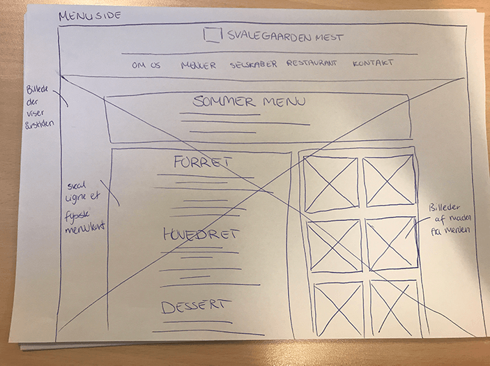
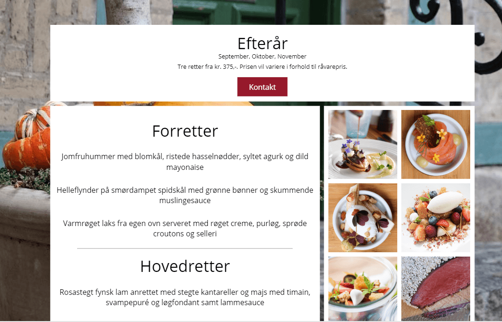
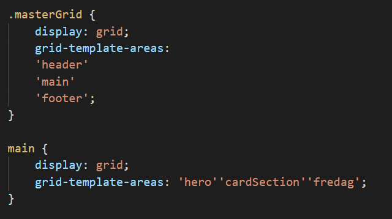

<!-- <!DOCTYPE html>
<html lang="en">

<head> 
    <meta charset="UTF-8">

<meta name="description" content="En samling af webudvikling projekter, skabt ved brug af HTML, CSS og Javascript. Velkommen til mit Portfolie">
    <meta name="viewport" content="width=device-width, initial-scale=1.0">
    <link rel="stylesheet" href="../style.css">
    <title>| Daniel Grunnet |</title>
    <link rel="stylesheet" href="https://cdnjs.cloudflare.com/ajax/libs/animate.css/4.1.1/animate.min.css"/>
     <link
            href="https://fonts.googleapis.com/css2?family=Kaushan+Script&family=Montserrat:ital,wght@0,400;0,500;1,400&family=Nunito:wght@400;700&display=swap"
            rel="stylesheet">
            <link rel="preconnect" href="https://fonts.googleapis.com">
    <link rel="preconnect" href="https://fonts.gstatic.com" crossorigin>
    <link href="https://fonts.googleapis.com/css2?family=Josefin+Sans:ital,wght@0,100;0,200;0,300;0,400;0,500;0,600;0,700;1,100;1,200;1,300;1,400;1,500;1,600;1,700&display=swap" rel="stylesheet">
        <link rel="stylesheet" href="https://cdnjs.cloudflare.com/ajax/libs/font-awesome/4.7.0/css/font-awesome.min.css">
    <link rel="stylesheet" href="https://cdnjs.cloudflare.com/ajax/libs/font-awesome/4.7.0/css/font-awesome.min.css">
    <link rel="stylesheet" href="https://use.typekit.net/aib7obh.css">
    <link rel="apple-touch-icon" sizes="180x180" href="../assets/favicons4/apple-touch-icon.png">
    <link rel="icon" type="image/png" sizes="32x32" href="../assets/favicons4/favicon-32x32.png">
    <link rel="icon" type="image/png" sizes="16x16" href="../assets/favicons4/favicon-16x16.png">
    <script  src="../assets/javascript/script.js"></script>
</head>

<body class="bgWrapper">
  <div class="bgWrapper-inside">
    <header>
        <div class="logo">  <a href="./">  Daniel Grunnet</a></div>
        <nav>
            <ul id="navbar">
                <li> <a href="projects.html" class="activePage"> Projekter</a></li>
                
                <li> <a href="about.html"> Om mig</a></li>
            </ul>
            <a href="javascript:void(0);" class="icon" onclick="navbar()">
              <i class="fa fa-bars"></i>
            </a>
        </nav>
    </header>
    <main class="content">
        <div class="caseStudyoverskrift">
            <h1 class="caseStudyTitle">Svalegaarden Mest</h1>
            <div class="caseStudyImgContainer"> 
              <a href="https://mmd.ucn.dk/class/mmda0919/1081026/sem1/tema4/" target="_blank" rel="noopener noreferrer"> 
              <div class="caseStudyImageTop2"> </div></a>
              <h2> <a href="https://mmd.ucn.dk/class/mmda0919/1081026/sem1/tema4/" target="_blank" rel="noopener noreferrer"> Se løsningen her</a></h2>
            </div>
            
            <section class="sectionGridCaseStudy">
                    <section class="boxOne">
                      <h3>Opgaven</h3>
                      <p>
                        Jeg fik til opgave at producere et nyt website til Svalegaarden Mest i forbindelse med 1. semester eksamen. 
                        Deres daværende website udtrykte ikke tydeligt nok forskellen mellem de fire årstidsmenuer og den høje kvalitet som de ville tilbyde og de ønskede tilmed 
                        et moderne website, der fremstillede deres ydelser eksklusivt og visuelt æstetisk. <br>
                        Løsningen er realiseret i samarbejde med min eksamensgruppe. 
                        
                      </p> 
                    </section>
                    <section class="boxTwo">
                      <div class="imgBoxes">  <p class="description">Wireframe med kommentarer</p> </div>
                  </section>
                
            
                  <section class="boxThree">
                    <div>
                      <h3>Analyse og design</h3>
                      <p>
                        Vi havde et strategisk brief, hvor vi skulle forholde os til farver, fonts, logo mm. <br> 
                        Efter at have orienteret os satte vi os for at finde frem til målgruppen og starte interviews.
                        Efter at have analyseret resultater fra brugerundersøgelsen, samt en mindre virksomhedsanalyse af Svalegaarden Mest, og udarbejdelse af content inventory, startede 
                        idégeneringen hvor vi sketchede, og herefter lavede mockups ved brug af adobe XD.
                      </p>
                      
                    </div>
                  </section>
            
                  <section class="boxFour">
                    <div class="imgBoxes">  <p class="description">Svalegaarden havde flere forskellige menu sammensætninger, som var delt op i årstider</p> </div>
              
                  </section>
            
                  <section class="boxFive">
                    <div>
                      <h3>Realisering</h3>
                      <p> Løsningen blev realiseret ved brug af <span> HTML, CSS og Javascript </span> og der blev her samarbejdet ved brug af Github. 
                        Kodningen er opbygget i et grid system, hvor der til alle undersider er brugt et grid, kaldet ‘masterGrid’, da alle siderne indeholder header, main og footer. 
                        Derefter er header og footer opbygget og indsat i hver sit HTML dokument, så det fungerer som templates, hvor det eneste, der mangler er ‘main’ indhold. 
                        I "main" er der derefter brugt et individuelt grid, til at adskille de forskellige sider.
                       <br> <a href="https://mmd.ucn.dk/class/mmda0919/1081026/sem1/tema4/" target="_blank">Se løsningen her</a>
                      </p>
                    </div>
                    <div>  <div class="imgBoxes">  </a></div></div>
                    <div class="boxFiveOutro"> <button class="btnFp btnFpStyle" onclick="window.location.href = '../pages/projects.html';"> <span> flere projekter</span></button></div>
                   
                  </section>
    
            </section>
    </main>

    <footer>
        <p class="githubText">Github</p>
        <a class="githubContainer" href="https://github.com/ucndaniel" target="_blank" rel="noopener noreferrer">
            <div class="github">
           </div>
        </a>

        <p class="emailText">Email</p>
        <div class="email">
          <a href="mailto:dangrunnet@outlook.com"> <i style="font-size:55px" class="fa">&#xf0e0;</i></a>
      </div>

        <p class="somethingText"> Linkedin</p>

        <a class="linkedContainer" href="https://www.linkedin.com/in/daniel-grunnet-1a2a8a1a6/" target="_blank"
            rel="noopener noreferrer">
            <div class="something">
                
            </div>
        </a>
    
</footer>
</div>
</body>

</html> -->